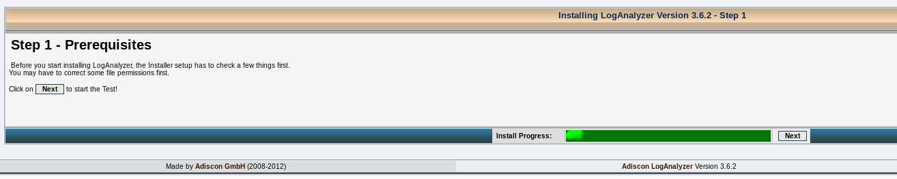
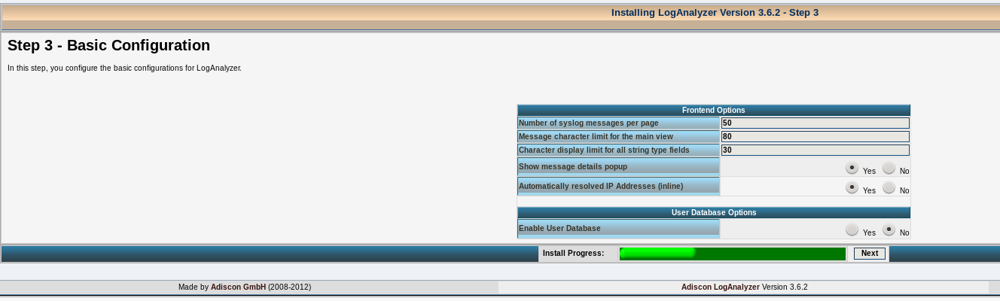

Çoğu son kullanıcı, kayıt (log) dosyalarını bilmez. Biraz ileri seviyede olanlar ise hatalarla karşılaşınca bunlara bakarlar. Ama sistem yöneticileri için sistemin neler yaptığını sürekli izlemek önemlidir. Bunun içinse bu kayıtları inceleyen araçları kullanırlar. Nasıl mı? Cevabı yazımızda.
Günlük kayıtları(Log) çalışan sistemler için çok önemlidir. Eğer kişisel kullanıcıysanız bu kayıtlara
bakarak sisteminizdeki sorunları çözebilir, eğer sunucu sistemlerini yönetiyorsanız bu kayıtlara bakarak hem sorunlarınızı çözebilir hemde sisteminizde sizden habersiz olup biten olaylar var ise bunları görebilirsiniz.
Bu işi yapmak için Ubuntu sistemlerde varsayılan olarak rsylog gelmektedir. Ben ise kendi sistemlerimde Balabit firmasının geliştirmeye devam ettiği syslog-ng uygulamasının opensource versiyonunu kullanmaktayım.
Bu yazımın ilk kısmında depolarda var olan syslog-ng uygulamasını kuracağım. İkinci kısmında ise bu kayıtları daha kolay anlamamızı sağlayacak olan bir uygulama olan LogAnalyzer kurulumunu yapacağım. Eğer “Ben rsyslog’dan memnunum” derseniz direk olarak ikinci kısmı uygulayabilirsiniz. :)
Artık yazımızın ilk kısmına başlayabiliriz. Öncelikli olarak Ubuntu üzerinde varsayılan olarak gelen rsyslog’u sistemden kaldıracağım.
Şimdi sisteme syslog-ng yi yükleyelim.
apt-get install syslog-ng
Bu dakikadan sonra artık loglama işini syslog-ng devralmış olacak. Bunun doğruluğunu test etmek için /var/log/messages dosyasının son satırlarına bakarsanız, syslog-ng yazdığını göreceksiniz. Burada dikkat edilmesi gereken messages dosyasının izni. Şuan için root hakları ile dosyaya bakabilirsiniz.
Jul 17 15:25:55 syslog-ng kernel: [ 0.000000] BIOS-e820: [mem 0x000000000009f000-0x000000000009ffff] reserved
Jul 17 15:25:55 syslog-ng kernel: [ 0.000000] BIOS-e820: [mem 0x00000000000ca000-0x00000000000cbfff] reserved
Jul 17 15:25:55 syslog-ng kernel: [ 0.000000] BIOS-e820: [mem 0x00000000000dc000-0x00000000000fffff] reserved
Jul 17 15:25:55 syslog-ng kernel: [ 0.000000] BIOS-e820: [mem 0x0000000000100000-0x000000001fedffff] usable
Jul 17 15:25:55 syslog-ng kernel: [ 0.000000] BIOS-e820: [mem 0x000000001fee0000-0x000000001fefefff] ACPI data
Birazcık syslog-ng uygulamasını karıştıralım. Yapılandırma dosyası /etc/syslog-ng/ dizininde bulunan syslog-ng.conf dosyasıdır. Bu dosya içinde önce “options” tanımlamalarında Varsayılan olarak gelen değerler şuan için bizim için yeterlidir. Eğer log dosyalarına erişimin kısıtlanmasını istersek perm() değerinde değişiklik yapmamız gerekecek. Biz bir web uygulaması ile bu logları okumaya çalışacağımız için izin için; perm(0604) kullanacağız.
Logların nereden toplanacağı ise “source” tanımlaması ile oluyor. Varsayılan olarak, aşağıda görüldüğü gibi, local makine logları toplanıyor. Burada s_src kaynağımıza verdiğim isim. Bu ismi dilediğiniz gibi verebilirsiniz.
source s_src {
system();
internal();
};
İkinci kısımda ise toplanan logların nereye yazılacağını tanımlayacağız. Bunun için;
destination d_messages { file("/var/log/messages"); };
“d_messages kısmına” istediğinizi yazabilirsiniz. Burada ben loglarımın, /var/log/messages dosyasına yazılmasını istiyorum. Eğer bir de merkezi log sunucumuz varsa ve bütün logları merkezi sunucuda da toplayacaksak yeni bir destination daha tanımlamamız gerekecek. Bunun için;
destination d_logserver { tcp("x.x.x.x"); }
TCP portunu kullanarak x.x.x.x IP’li merkezi log sunucunuza log verileri gönderilecek demektir.
Son kısımda ise artık loglama işleminin nasıl yapılacağını tanımlıyoruz. Aşağıda makinemizdeki logların herhangi bir ayrıştırma işlemi yapılmadan olduğu gibi messages dosyasına yazılacağını göstermektedir.
log {
source(s_local);
destination(d_messages);
};
Basit olarak yapılandırmamız bu kadar. Daha detaylı bir yapılandırma dosyası için [1] adresinden bilgi alabilirsiniz.
Artık yazımızın ikinci kısmına geçebiliriz. Bu işi yapacak birçok uygulama var. Ben arayüzü daha sıcak geldiği için LogAnalyzer kullanacağım. Öncelikle sitesinden uygulamayı indireceğiz.
wget http://loganalyzer.adiscon.com/downloads/loganalyzer-3-6-2-v3-stable
Bu uygulama php ile web tarafında çalıştığından dolayı, php ve http sunucu paketlerinin sistemde kurulu olması gerekli.
apt-get install php5 apache2
Sıkıştırılmış paketi açalım.
tar xvfz loganalyzer-3.6.2.tar.gz
Bize gerekli olan dizin src dizinidir. Bunu web sunucunun “documentroot” dizinine taşıyacağız. Bu dizin Apache ayarlarınıza göre farklılık gösterebilmekte. Buraya dikkat ediniz.
mv loganalyzer-3.6.2/src/ /var/www/loganalyzer
Uygulamanın olduğu dizinde ayar dosyası bulunmamakta. Bunun için bir ayar dosyası oluşturup gerekli yazma iznini vermemiz gerekli.
touch /var/www/loganalyzer/config.php
chmod 666 /var/www/loganalyzer/config.php
Artık kurulumlar tamamlandı. LogAnalyzer yapılandırmasını yapabiliriz. Bir web tarayıcı açalım
http://localhost/loganalyzer
yazdığımızda karşımıza uyarı ekranı gelecek.

“here” yazan yere tıklayalım ve devam edelim.
“Next” diyerek geçiyoruz.

config.php dosyamız olmasa ya da yazma izni olmasaydı hata alacaktık. Şu an için hata almadığımızdan “Next” diyerek devam ediyoruz.

Eğer varsayılan ayarları kullanmak istiyorsak “Next” diyerek devam ediyoruz.
Number of syslog messages per page: Her sayfada gösterilecek olan log mesajı sayısı.
Message character limit for the main view: Mesaj için karakter limiti.
Show message details popup: Kurulum bitince göreceğiniz gibi bir mesaj üzerine gelince popup olarak bilgi geliyor. Bunun olmasını istemiyorsak buradan “No” seçili olacak.
Automatically resolved IP Addresses (inline)
Enable User Database\

Name of the Source istediğimiz gibi isim verebiliriz.
Source Type DiskFİle/MysqlNative/Database/MongoDB seçeneklerimiz var. Logları kaynak olarak nereden okuyacağının ayarını yapıyoruz. Ben disk text dosyalarından okutacağım için DiskFile seçtim.
LogLine syslog-ng kullandığımız için Syslog/Rsyslog seçtim

Ve kurulum tamamlandı

Kaynak:
[1] http://www.balabit.com/sites/default/files/documents/syslog-ng-ose-3.3-guides/en/syslog-ng-ose-v3.3-guide-admin-en/html/syslog-ng.conf.5.html